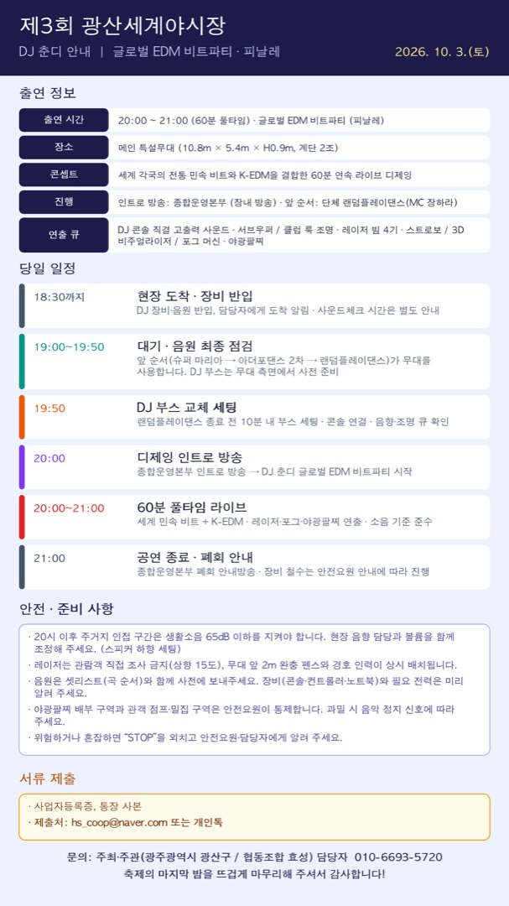

이미지를 누르면 크게 볼 수 있고, 길게 눌러 저장할 수 있습니다.
DJ 춘디 님은 올해 축제의 마지막 무대, 글로벌 EDM 비트파티를 60분 풀타임으로 맡아 주십니다.
10월 3일(토) 일정과 준비 사항을 안내드립니다. (첨부 이미지 참고)
출연 정보
- 일시: 2026. 10. 3.(토) 20:00 ~ 21:00 (60분 풀타임) · 글로벌 EDM 비트파티 (피날레)
- 장소: 광산구 월곡동 목련로 메인 특설무대 (10.8m × 5.4m × H0.9m, 계단 2조)
- 콘셉트: 세계 각국의 전통 민속 비트와 K-EDM을 결합한 60분 연속 라이브 디제잉
- 진행: 인트로 방송은 종합운영본부 장내 방송 / 앞 순서는 단체 랜덤플레이댄스(MC 장하라)
- 연출 큐: DJ 콘솔 직결 고출력 사운드·서브우퍼 / 클럽 룩 조명·레이저 빔 4기·스트로보 / 3D 비주얼라이저 / 포그 머신·야광팔찌
당일 일정
- 18:30까지 현장 도착 → DJ 장비·음원 반입, 담당자에게 도착 알림 (사운드체크 시간은 별도 안내)
- 19:00~19:50 대기·음원 최종 점검: 앞 순서(슈퍼 마리아 → 아더포댄스 2차 → 랜덤플레이댄스)가 무대를 사용하므로 DJ 부스는 무대 측면에서 사전 준비해 주세요.
- 19:50 DJ 부스 교체 세팅 (랜덤플레이댄스 종료 전 10분 내, 콘솔 연결·음향·조명 큐 확인)
- 20:00 종합운영본부 디제잉 인트로 방송 → DJ 춘디 글로벌 EDM 비트파티 시작
- 20:00~21:00 60분 풀타임 라이브 (레이저·포그·야광팔찌 연출)
- 21:00 공연 종료 → 종합운영본부 폐회 안내방송, 장비 철수는 안전요원 안내에 따라 진행
안전·준비 사항
- 20시 이후 주거지 인접 구간은 생활소음 65dB 이하를 지켜야 합니다. 현장 음향 담당과 볼륨을 함께 조정해 주세요. (스피커 하향 세팅)
- 레이저는 관람객 직접 조사 금지(상향 15도)이며, 무대 앞 2m 완충 펜스와 경호 인력이 상시 배치됩니다.
- 음원은 셋리스트(곡 순서)와 함께 사전에 보내주세요. 장비(콘솔·컨트롤러·노트북)와 필요 전력도 미리 알려 주세요.
- 야광팔찌 배부 구역과 관객 점프·밀집 구역은 안전요원이 통제합니다. 과밀 시 음악 정지 신호에 따라 주세요.
- 위험하거나 혼잡하면 “STOP”을 외치고 안전요원·담당자에게 알려 주세요.